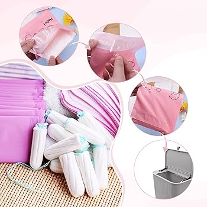

A period is a release of blood from a girl's uterus, out through her
vagina. It is a sign that she is getting close to the end of
puberty.
It also Menstrual blood — which is partly blood and
partly tissue from the inside of your uterus — flows from your
uterus through your cervix and out of your body through your vagina.
Menstruation is driven by hormones. Hormones are chemical messengers
in your body.
Your pituitary gland (in your brain) and your
ovaries (part of your reproductive system) make and release certain
hormones at certain times during your menstrual cycle.
These hormones cause the lining of your uterus to thicken. This
happens so that if a pregnancy would occur, an egg can implant into
your uterine lining.
Hormones also cause your ovaries to release
an egg (ovulation). The egg moves down your fallopian tubes, where
it waits for sperm. If a sperm doesn’t fertilize that egg, pregnancy
doesn’t occur. The lining of your uterus breaks down and sheds. This
is your period.o means that she can get pregnant if she has sex.
Day one of your cycle is the first day of your period. This is when
your uterus starts shedding the lining it has built up over the last
28 days.
After your period is over, the lining of your uterus starts to build
up again to become a thick and spongy ‘nest’ in preparation for a
possible pregnancy.
On day 14 (for most women), one of your ovaries will release an egg,
which will make its way through a fallopian tube and will eventually
make its way to your uterus (called ovulation).
On day 28 (for most women), if you have not become pregnant, the
lining of your uterus starts to shed. This is your period.
The
blood you lose during your period is the lining of your uterus.
Period trackers ask users to enter a large amount of personal data, including period dates, sexual activity, mood, symptoms (such as bloating or cramps), and energy levels. Based on this self-reported data, the apps use algorithms to make predictions.
People use pads or period panties to absorb menstrual flow and keep
them dry and leak-proof. The choice between pads and period panties
depends on personal preference, lifestyle, and needs. Here are some
factors to consider:
Absorbency and flow
How heavy your flow is on different days of your cycle. Pads may be
easier to change during the day, while period panties are more
convenient overnight.
Activity level
Period panties may be more comfortable and secure for active days or
workouts.
Cost and lifestyle
The upfront cost of period panties compared to the long-term savings
and convenience.
Sustainability goals
Both pads and period panties are more eco-friendly than disposables.
Period panties are a comfortable, low-maintenance, and eco-friendly
alternative to traditional period products. They are reusable, and
most brands can be washed in the washing machine. They also don't
pose a risk of toxic shock syndrome like tampons because you don't
insert anything into your body.
You can wear period panties by themselves for most people, but you
may choose to wear a pad too for heavy days or if you work long
shifts.
Primarily, the prevalent use of non-recyclable and non-biodegradable
disposable menstrual products, like sanitary pads and tampons, harms
the environment.
Their lifecycle pollutes water bodies and landfills, leading to
microplastics and other environmental and health hazards.
POLLUTION DUE TO IMPROPER DISPOSAL OF PAD :
Improperly disposing of sanitary pads can cause several
environmental issues, including:
WATER POLLUTION:
Sanitary pads can end up in water bodies, such as rivers, lakes, and
oceans, when they are flushed down toilets or dumped in other ways.
The chemicals in the pads, such as dioxins, phthalates, and
formaldehyde, can leach into the soil and contaminate the water.
This can harm aquatic life and potentially make its way into the
food chain.
LANDFILL POLLUTION:
Sanitary pads are non-biodegradable and non-recyclable, so they can
end up in landfills where they can persist for hundreds of years.
Landfills can also overflow, releasing harmful gases and liquids
into the environment.
WASTE MANAGEMENT ISSUSES:
Improper disposal can lead to sanitary pads clogging drains and
sewage systems, which can increase maintenance costs. Waste
management workers who handle used sanitary pads can also be exposed
to health hazards.
PLASTIC POLLUTION :
Sanitary pads can contain up to 90% plastic and other petrochemical
byproducts. These materials can remain in landfills for hundreds of
years and contribute to the growing problem of plastic pollution.
INCINERATOR EMISSION:
Incinerators may not burn sanitary pads at high enough temperatures
to fully burn the plastic, and they may not have proper ventilation.
This can lead to the release of fumes into the air.
To reduce the environmental impact of sanitary pads, you can
consider using reusable cloth pads. Cloth pads are a cheaper option
than disposable pads over the long term, and they are also more
eco-friendly

POLLUTION DUE TO TAMPONS :
Tampons can have a negative impact on the environment in several
ways:
WASTE:
Tampons are non-biodegradable and can take hundreds of
years to decompose. They can also pollute landfills and water
bodies.
MICROPLASTC:
The plastic packaging and disposable products of
menstrual products break down into microplastics, which can harm
marine ecosystems and ocean biomes.
SEWER OVERFLOW:
Flushing tampons can contribute to sewer
overflows and end up in oceans, rivers, and beaches.
ANIMALS:
Tampon applicators can take over 20 years to break down
in marine environments and can be ingested by animals.
TOXIC CHEMICAL:
Tampons can contain dangerous chemicals like
bleach, phthalates, and pesticide residues. They may also contain
toxic metals like lead and arsenic.
PROCESSING:
The processing of raw materials used to make tampons
is energy-intensive.
PACKAGING:
The packaging of menstrual products is a major source
of waste.
Two of the health problems mentioned above, thyroid disease and
polycystic ovary syndrome (PCOS), can cause irregular periods.
Another health problem that can cause irregular periods is uterine
fibroids, which are benign lumps that grow on the uterus. Some of
the symptoms of this illness are heavy periods, cramping, painful
sex, and an urge to urinate.